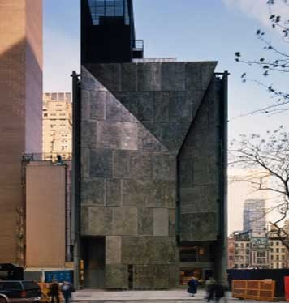

The Places You'll Go!
American Folk Art Museum
|  |
Cost:
|
||||||||||||
| The National Endowment for the Arts (NEA) awarded the Museum their prestigious Art Works grant, which will support our scholarly lectures and symposia related to upcoming exhibitions. We express our gratitude to Acting Chairman Joan Shigekawa and the staff at the NEA for this recognition and support. Art Works grants support the creation of art that meets the highest standards of excellence, public engagement with diverse and excellent art, lifelong learning in the arts, and the strengthening of communities through the arts. We could not be prouder to be among this distinguished group of recipients. On the subject of lectures and symposia, public programs at the American Folk Art Museum offer unique, enriching, and lively learning opportunities. Whether discussing traditional works (quilts, needlework, or chalkware, for example), or works of art by the self-taught (artists such as Nek Chand, Thornton Dial, or Bessie Harvey, just to name a few), the scholars and experts who lead our discussions are knowledgeable, enthusiastic, and eager to share ideas. |
|||||||||||||